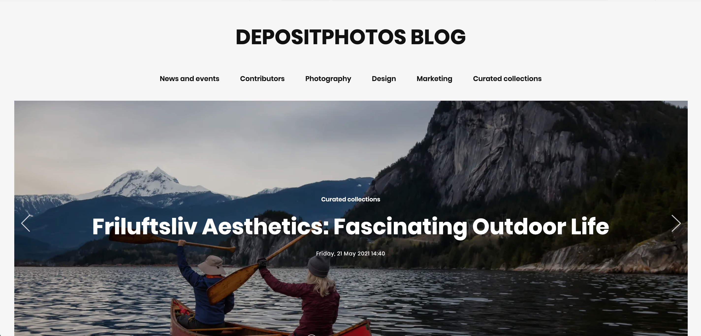
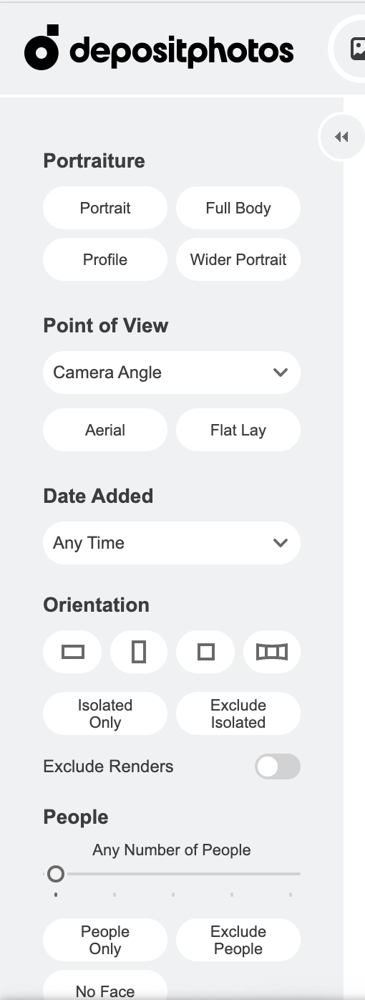
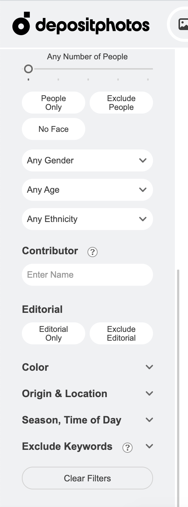
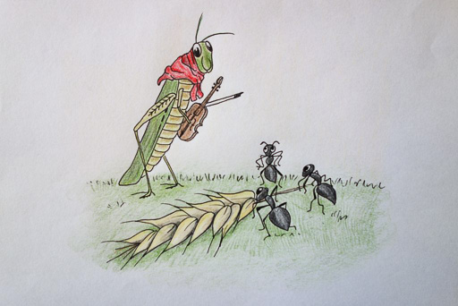

I took this class under ProfessorTeresa Hughes, Media Arts Faculty and Media Arts
Cooperative Education Coordinator. I learned basic experience in audio mixing,
movie production, research, and other media tools, documenting each assignment
in a Wordpress site that I created. I re-posted those blog posts into this web page. Enjoy!
Check out my blog posts below!
A Little About Me
Hello!
My name is Kailey Slocum. I have also been called 'Rapunzel's cousin' because I had four feet
and eleven inches of hair before I cut it and donated thirty inches to an organization
called Children with Hair Loss.
There are so many hobbies I enjoy, and only a few of them are: paper crafting, reading books,
listening to music, writing in journals, riding horses, drawing, and taking photos with
my point-and-shoot camera which I've had since I was about ten. Most of all, I like to make
things look good, whether it be setting the table for Thanksgiving dinner, organizing papers,
arranging home decor, or designing cards on PicMonkey.
Here are Lane Community College, I am currently working towards the Associate of Arts Oregon
Transfer degree and the Associate of Arts Multimedia Design degree. I chose Multimedia Design
because of its combination of media. As I learn a variety of skills, I am hoping to find my niche!
Although I would like to put my associates degree to use as soon as I graduate from LCC, I may end up
transferring to a university instead so that I can receive a Bachelor of Arts.
By: Kailey Slocum | October 3, 2019 | F19-P1 About Me
Media Arts Campus Resources: on Camera
On Week Two of MUL 101, I was assigned a scavenger hunt...
Camera in hand, I set off, excited to learn more about campus!
In Building 18, I was greeted by the friendly crew at the Equipment Checkout counter.
I snapped this photo, and didn't realize until later that two of them were having
lots of fun with silly faces!
Then I headed to the Blue Cyc Wall, which has a fascinating network of lights
and rigging above it.
This next photo is of the Center for Student Engagement,
from which often comes the delicious wafting smell of buttery popcorn...
Having never been in Building 11 before, I enjoyed looking around
at its art galleries.
When I first walked into Building 11, I completely overlooked a
small vintage vending machine off to the side. Turns out, it was the
Art-O-Mat!
One thing I love about librians is that they know everything.
After taking this picture in the Center Building's library, I got
a question answered by this kind lady.
Despite the fact that the day was overcast and drizzling, the
billowing clouds and colorful trees still set a beautiful background
for the silver sculpture in front of the Health and Wellness Building.
Here is Ingram's office in Building 11!
When I visited the SHeD Help Desk, I noticed that they had a 3D printer,
so I decided to include it (and some of its creations) in the picture!
...and this is Judy Gates, my Academic Advisor!
Back in Building 18 is Teresa's office; I love the way the high window illuminates the room.
Building 1 is a unique place, with rows of colorful flags hanging from the curved ceiling.
I photographed my favorite part of the flag display.
In front of the Center Building near a sloping walkway is a metal board
with hunreds of engraved names posted on it. A few years ago, my older sister
pointed out the name of someone who used to teach here at LCC: Rod Metzger.
He is a special family friend, and I grew up riding his horses.
When I was about ten, I bought myself a little camera and took it with me
all over the place, snapping shots of my life. I still love taking photos
to capture special moments and to just be creative!
Although I am undecided as to what specific career in multimedia design I want to pursue,
I am interested in photography and I find inspiration when looking at others' works of art,
something that isn't lacking in the website I found.
Depositphotos is a website where you can
"download more than 130 million high-quality royalty-free stock images
and high-definition footage." It provides pictures, news images,
illustrations, and videos that you can buy or simply browse through.
If you are like me and aren't interested in buying images, Depositphotos also
offers a free option! By simply creating an account on their website,
you can receive free weekly stock photo downloads or sign up for informational e-mails!

At the bottom of the website page under a list entitled DEPOSITPHOTOS is a link
to the Depositphotos Blog. From photography
and design to business and marketing, these blogs provide inspiration,
up-to-date news, and artistic advice. For example, one blog category includes
photo collections of specifically selected photos arranged in certain themes,
and another includes fascinating interviews of professional photographers.
Depositphotos Blog makes it easy for you to blog on their website, and to learn
a little about the others who have posted! Commenting on posts is available
and easy, and you can also connect with Depositphotos on social media through
simple links on their website.
This website is pleasantly arranged in a simple, well-designed format.
Navigation links are placed in convenient locations, and posts and
advertisements are arranged in neat rows. The simple neutral colors
it uses cause the colorful photos to catch your eye.
Here are a few more fun aspects of the Depositphotos website:


When browsing through stock images and media, there is a handy tool bar
on the left side of the screen from which you can easily locate
what you are looking for by choosing a color scheme, category, and more.
With a click of your mouse, you can also switch the language of the
website to any of twenty different languages!
Depositphotos will definitely be my go-to website for photography tips,
tricks, and inspiration! I am excited to keep exploring their website
and reading their blogs.
Written and posted by: Kailey Slocum | October 15, 2019 | F19-P3 Blog Search
I never thought of working with audio as especially fun, but just because I
may not be skilled at it doesn't mean I can't have fun with it! I'm finding
that, as my homework projects are taking me out of my comfort zone,
I am actually enjoying branching out to work with different types of media!
Choosing the subjet of my audio project took a lot of thought. I had several
exciting ideas, but none of them seemed 'do-able' enough until I settled
on a simply Aesop's fable entitled "The Ants and the Grasshopper." I had
grown up listening to and reading many variations of this story, so I was
excited to make my own spin on it!
I enjoyed this story for many reasons. Technically, there's only two main characters:
the group of ants, and the grasshopper! Yet, the story itself has the versatility
to be adapted with different characters and settings and still convey the same
ideas. In regards to the 'moral of the story,' I enjoy how this fable
emphasizes the importance of being prompt and prepared. Unfortunately,
procrastination is something I struggle with!
I enjoyed writing the script and recording my voice (and my siblings'
voices) as well. My script ended up being way too long by the time
I had put all the audio together in Audition, so this version is
about half the size of the original! Working on this project also
took me much longer than I had planned; time was short, so I hope
to keep working on the audio in the future to make it better.

As I searched for a picture for my video, I realized that the one I wanted
to use was most likely copyrighted. So, I just drew my own version
of the picture instead!
By: Kailey Slocum | October 29, 2019 | F19-P4 Audio
Image Editing: The Five Senses
Creating a video project about the number 5 seemed challenging. After all,
not many things come in sets of five... So I settled on the simple
5 Senses: Touch, Smell, Hear, Taste, and See.
I enjoyed working with this topic because the Five Senses is something that
often seems under-appreciated. Just brainstorming about the five things
I love about each of the five senses reminded me of how much I use them
(and overlook them) every day!
When the time came to start creating my video, I first started with the audio.
I recorded my voice, and then created a long checklist of all of
the things I would need to take pictures of. I noticed that a lot of my
pictures were "zoomed-in." I should have balanced them with more distant
shots, but I really enjoyed the challenge of getting new, close
perspectives of everyday items around my house.
At one point during the day, I went on a relaxing, long walk around the
neighborhood to capture some photo and video footage of the beautiful
fall trees and some of the last few flowers in bloom. The weather was
cold, but the light gray clouds were perfect for the lighting of my pictures.
On the other hand, taking pictures of the food was by far the hardest job;
I'd much rather eat food than photograph it!
Using Premiere Pro to compile this video was fun; I fell in love with it
after getting introduced to it in the Time-Based Tools class. Although
I'm an amateur, I love to use Premiere Pro to renovate old homemade
video projects I've done a long time ago. Each time I use it, I keep learning.
If I had extra time and energy for my video project, I would have worked
on my lettering and fonts in more detail because strangely, my words
were blurry in Premiere Pro. I was worried, but thankfully, they
they appeared rather normal in the exported video.
So here it is! I hope you enjoy this video and won't forget just how amazing
it is to be able to touch, smell, hear, taste, and see!
So often we get caught up in the speed of life and forget to take time
to enjoy the little things. I put this video together to try to capture
that concept. The first half of it is about some of the many ways we rush.
The second half is about some of the wonderful things we miss when we rush
- the beautiful, slow, time-taking, rewarding activities we don't always do.
I was thinking of putting together this video in a ‘this versus that’ format,
but then I changed my mind. (For example: driving versus walking,
laundry machines versus a clothesline, texting versus talking in
person or sending a physical letter, heating up an instant microwave meal
versus making
a home-cooked dinner, etc.) Brainstorming for this project sure was fun!
Even in the middle of putting together this video, I caught myself trying to speed along.
Instead of gettin impatient when the computer was slow, I had to remind myself to sit back and relax!
Like usual, this project had its ups and downs, but overall, I enjoyed putting it together.
It was very difficult to find the video footage I wanted because strangers don't like
being videoed in the background, so I ended up getting some other shots instead.
One of my siblings was especially helpful in volunteering to be in my video footage,
so I really appreciate her help! Also, I used her camera for all of the videos and
pictures I've taken for my class projects.
Like I have with all of my other projects, I used a snowball mic from the Media
Checkout Counter to record my voice. Unfortunately, the audio seemed a lot
fuzzier this time! I hope it wasn't becaue of the specific mic I was using!
So, the moral of the story is: I encourage you to slow down and pay attention
to the little things! Give someone a smile, let a ladybug crawl on your finger,
and drive the speed limit for once. The world is only getting faster, so
don't wear yourself out trying to keep up with it!
By: Kailey Slocum | December 5, 2019 | F19-P6 Final Project